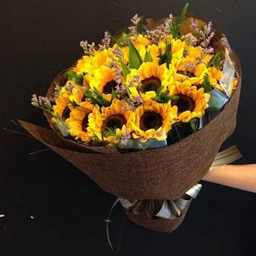
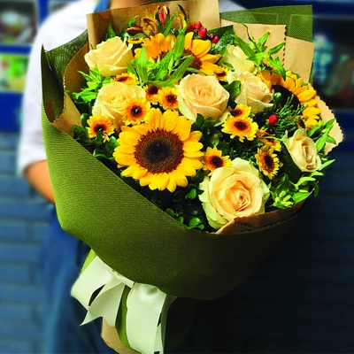

|  |
BÓ HOA HƯỚNG DƯƠNG là một trong những món quà được nhiều người lựa chọn vì nó không chỉ đem lại vẻ đẹp mà còn thể hiện được tình cảm của người tặng đến người được tặng trong ngày đặc biệt của họ. Vẻ đẹp của hoa là một phần không thể thiếu trong cuộc sống chính vì lý do đó mà món quà từ hoa sẽ thật tinh tế và đầy ý nghĩa nếu bạn đang băn khoăn không biết nên tặng món quà ra sao hoặc muốn tặng thêm hoa đi kèm bên cạnh món quà chính. Tùy theo từng lứa tuổi, mối quan hệ… mà việc chọn BÓ HOA HƯỚNG DƯƠNG cũng sẽ khác nhau làm sao để đem đến món quà đẹp, trang nhã mà thể hiện được hết lời bạn muốn nhắn gửi thay vì các kiểu hoa đơn giản trên thị trường. Mỗi loại hoa lại mang trong mình những thông điệp riêng mà bạn nên tìm hiểu trước khi lựa chọn. |
|  |
Những loài hoa đẹp là món quà mà mẹ thiên nhiên đã đem đến cho chúng ta. Người ta thường nói: “Vẻ đẹp rực rỡ của hoa là minh chứng cho vẻ đẹp của tình yêu, hoa có thể tàn úa nhưng tình yêu thì bất diệt”. Chính vì thế, món quà từ Bó hoa hướng dương luôn là sự lựa chọn hàng đầu khi bạn muốn bày tỏ những tình cảm đẹp nhất của mình đến cho một nửa còn lại. Một Bó hoa hướng dương đẹp luôn khiến cho mọi người hạnh phúc và cảm thấy đầy yêu thương. Và tùy theo từng dịp, sở thích và đối tượng mà việc lựa chọn các loại hoa trao tặng cũng khác nhau. Những Bó hoa hướng dương không chỉ là lời khen, lời chúc mà còn là lời yêu thương mà bạn trao tặng đến một nửa gắn kết trên thế giới của mình thay cho những xúc cảm ngọt ngào như vẻ đẹp của những đóa hoa rạng ngời. Bó hoa hướng dương - rực rỡ và rạng ngời với sắc vàng của hoa mặt trời. Trao yêu thương trong cánh hoa hướng dương rực rỡ.. |
RỰC RỠ SẮC
VÀNG
Hoa hướng dương tượng trưng
cho sự đáng yêu, trung thành và
trường thọ.